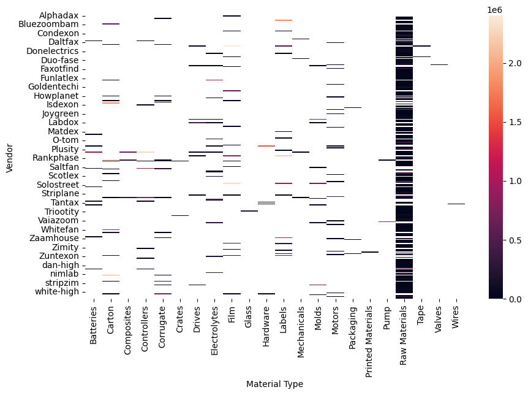

Analyzed supplier quality and manufacturing downtime to identify operational risks and improve production efficiency.

The heatmap highlights the relationship between suppliers, material types, and operational quality risks.